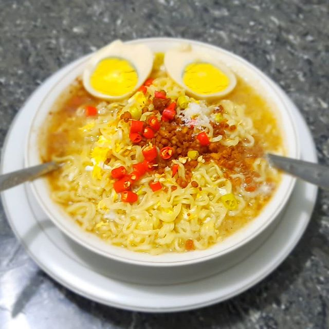

Resep Mie Asik

Mie Asik merupakan resep mie yang sangat cocok untuk disajikan dikala hujan. Paduan rasa mie yang gurih dengan pedas cabai merah dijamin mampu membuat suasana hujan menjadi lebih hangat dan Asik. Mie Asik merupakan resep mie yang populer dikalangan mahasiswa khususnya anak kos
Alat dan Bahan
- 1 buah mie instan
- 1 butir telur
- 5 buah cabai merah
- 1 buah mangkok
- 2 buah wajan
Langkah Kerja
- Siapkan alat dan bahan sesuai ketentuan diatas
- Panaskan air secukupnya dengan menggunakan wajan, dan masukkan sebutir telur
- Sembari menunggu telur masak panaskan air dengan wajan yang ke-dua
- Masukkan mie instan dan tunggu hingga mie-nya lunak
- Sembari menunggu mie-nya masak, siapkan bumbu mie instannya di mangkok
- Setelah mie-nya masak, tuangkan mie ke dalam mangkok dan aduk hingga merata
- Setelah telur yang direbus matang, dinginkan telur dan kupas
- Potong telur rebus dan letakkan di atas mie
- Potong cabai sesuai selera dan letakkan di atas mie
- Mie Asik siap dihidangkan :)